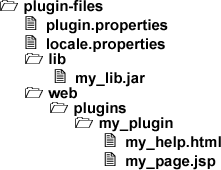

Chapter 4.2. Creating a plug-in package
The simplest kind of Docmenta plug-in just adds some library- or HTML/JSP-files to the web application directory. A plug-in package is a zip-file that contains a specifc sub-directory structure and two property-files. The property files define the meta-data of the plug-in.
As a first example, we create a plug-in that adds following files to the Docmenta web-application directory:
- my_help.html
- my_page.jsp
- my_lib.jar
The html and jsp files shall be placed in the sub-folder plugins/my_plugin. The jar file shall be placed in the sub-folder WEB-INF/lib.
We start by creating a new directory, e.g. named "plugin-files". In this directory we place the content of our plug-in package. First we create two text files within this directory, one with name "plugin.properties" and one with name "locale.properties". These two files are required for every Docmenta plug-in package. The file "plugin.properties" contains the plugin-metadata. The file "locale.properties" contains language dependent data. Both files have to obey the rules of the Java properties file format.
In our example, the content of the plugin.properties file could be as follows:
id = my_plugin
version = 1.0
required_app_version = 1.9
show_license = false
load_type = immediate
Listing 4.2.1. plugin.properties
Following table describes the properties that can be specified in the plugin.properties file:
| Property | Description |
|---|---|
| id | An identifier that uniquely identifies the plug-in. |
| version | The version number of the plug-in, e.g. "2.0". |
| required_app_version | The minimum Docmenta version that is required. |
| show_license | Whether to show a license agreement on installation of the plug-in or not. If this is set to "true", then a sub-folder named "license" has to exist in the plugin-package. The folder has to contain the agreement as an XHTML file named license.xhtml. Localized versions of the license agreement can be provided by using the filename license_xx.xhtml, where xx denotes a two-letter language code. |
| load_type | This property defines whether the plug-in shall be loaded immediately (after the plug-in has been installed), or the loading shall be deferred to the next server startup. Possible values are "immediate" and "next_startup". If the plug-in depends on jar files that are part of the plug-in package, then the load-type has to be set to "next_startup", because libraries that are added to the WEB-INF/lib folder during installation are not loaded until next server startup. |
| plugin_class | The fully qualified Java classname of a custom plug-in class. See Section 4.3.1, “Lifecycle methods” for an example. |
| config_dialog | Whether to show a configuration button, after the plug-in has been loaded. Possible values: true/false. Default is false. See Section 4.3.3.2, “ZK Dialogs” for an example. |
| keep_files | A list of files to keep in the plug-in directory, in case a newer version of the plug-in is installed. That means, these files are not overwritten by a newer version of the plug-in. For example, if a newer version of a plug-in is installed, this property allows to keep the configuration files of the old version. The property value has to be a space- or comma-separated list of relative file paths. The file paths are relative to the plug-in directory. See Section 4.3.3.2, “ZK Dialogs” for an example. |
| remove_webfiles | Whether to remove the plug-in files from the web-application directory, if the plug-in is disabled. Possible values: true/false. Default is true. |
Following an example of the locale.properties file:
my_plugin.description = My example plug-in.
my_plugin.help_url = plugins/my_plugin/my_help.html
Listing 4.2.2. locale.properties
At least the property with name plugin_id.description has to be provided, where plugin_id is the id of the plug-in as defined in the plugin.properties file (here: "my_plugin"). This property defines a descriptive name of the plug-in. This name is displayed in the user-interface. Optionally, a property named plugin_id.help_url can be used to provide a link to online-help for the plug-in.
The content of the locale.properties file can be localized by creating files with name locale_xx.properties, where xx is a two-letter language code. For example, if the user has set its GUI language to Spanish (language code "es"), then the values from the file locale_es.properties are used. If such a file does not exist, then the default values from locale.properties are used. Note, that currently only English is supported as GUI language.
Now that we have created the metadata files, we can place the actual plug-in files into the package directory. First we create a sub-folder named "web". On installation of a plug-in, all content in the "web" folder is copied into the Docmenta web-application directory. Therefore, to get the directory structure as mentioned above, we create a sub-folder named "plugins" inside of the "web" folder. In the created "plugins" folder we create a sub-folder named "my_plugin". Next we copy the jsp and html files into this folder.
Finally, we create a sub-folder named "lib" on the same level as the "web" folder. Next we copy the my_lib.jar file into this folder. As you may already guess, on installation of a plug-in, all content in the "lib" folder is copied into the "WEB-INF/lib" folder of the Docmenta web-application.
To summarize, the content of our plug-in package is as follows:

Figure 4.2.1. Example plug-in structure
Instead of creating a "lib" folder on the same level as the "web" folder, you could also create a sub-folder named "WEB-INF" inside of the "web" folder and place the "lib" folder therein.
The last step is to package the content of our "plugin-files" directory using a zip-tool. By convention, the name of the zip-file should at least include the id of the plug-in as well as the version number, e.g. "my_plugin_1_0.zip". The zip-file can then be installed as described in Section 2.7.5, “Installing Plug-ins”.
Note that on installation of a plug-in, a copy of the plug-in package is stored in the document-store directory. When a new version of Docmenta is installed, then on restart of the web-server, all plug-ins that were installed in the old version of Docmenta will be restored from the document-store directory. However, this may require a further restart of the web-server, to load libraries that have been installed as part of the restored plug-ins.